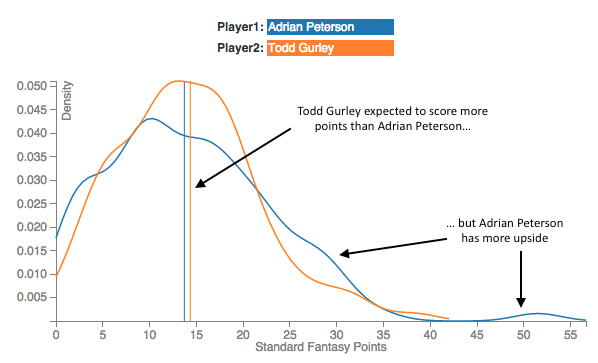

Distributions
Why we did it.
Move to California
You are an alien fresh off the spaceship in Roswell. You really miss the weather on your home planet and you are really not feeling the New Mexico desert (besides you got Breaking Bad on your home planet and don’t think drug dealing is for you). You know nothing about the weather in the US-of-A except the average highs and lows of each major city. You like the sound of the weather in San Francisco and Washington DC. Average daily high around 65, average daily low around 50? Ah, just like sweet old Gelgamak all 597 days a year!
Do you head west or east? It’s really tough to say unless you know more about the distribution of the weather. If you knew that the average low in DC in January is 29 vs 46 in SF, that decision might be a whole lot easier.
Tale of Two RB's
Moving on from an alien freezing off his 12 foot tail in the middle of a Nor’easter, imagine you are a fantasy football player (if you are here you probably are). You have to decide whether to start Adrian Peterson or Todd Gurley at RB (high class problems). They are both projected to get about 14 points. You are projected to lose your match and you know you will need a bit of luck, so want to choose the higher risk / higher upside player. Who do you choose?
You could waste your entire lunch break pontificating about whether Gurley’s youth gives him a better chance to break a long run or whether better QB play on Peterson’s team means he could be a big factor in the passing game. Or you could look at our charts.
This image compares Adrian Peterson to Todd Gurley. The vertical lines show the projections for each player. You can see that Todd Gurley is projected slightly higher than Adrian Peterson. (Compare these and other players' predictions for this week in the interactive visualizaiton)
The other lines show our estimate of the distribution of points each player might score. A higher line at a point on the x-axis means they are more likely to score that many points. Adrian Peterson’s blue squigly line is higher for lots of fantasy points. That suggests he is the higher upside player.
In addition to helping you compare players potential upside and point scoring variability. These charts can help you get a better sense of how likely different outcomes are for you player. For example, you can see that Todd Gurley is about twice as likely to get 15 points as he is to get 4 points. Similarly, he is about half as likely to get 22 points as he is to get 15 points.
How we did it.
We used an approach called “nearest neighbors” to estimate the distribution of points a player will score. It is a pretty intuitive model- find the players from the past that are the nearest 100 statistical neighbor to the player in question and see how many points those neighbors actually scored. We show the distribution of the points those neighbors actually scored in the past in the hope this will be a good proxy for how many points this player will score in the future.
This approach has a couple of drawbacks. Firstly, the algorithm does not pick which statistics are important when deciding who the closest neighbors are. Every statistic we give the algorithm will be treated as equally important to predicting performance. Secondly, our current methodology weights the closest neighbor as just as impactful as 100th nearest neighbor. This will particularly be an issue if a player does not have very many near neighbors.
Despite those drawbacks, we think this approach gives some reasonable insights into the distributions of points you can expect from players.